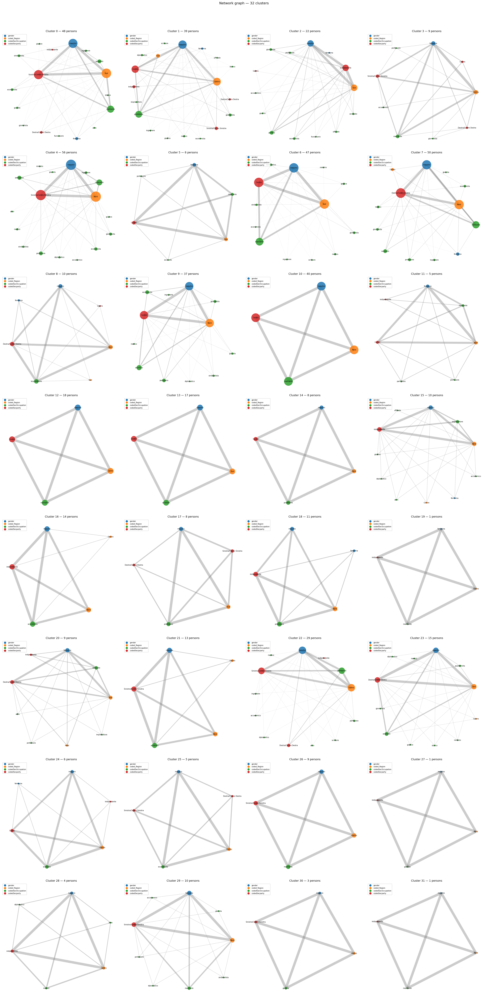
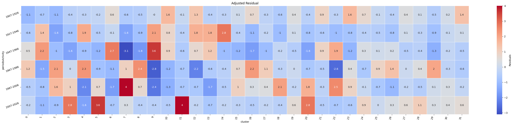
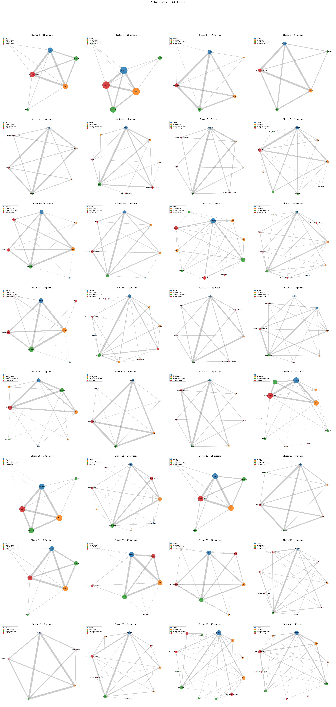
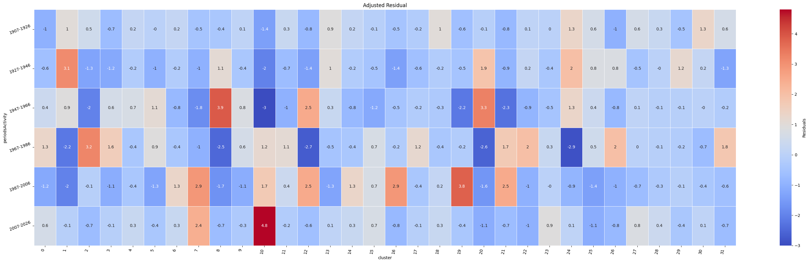

The last step that can be done in this analysis is tracing if there are some interesting profiles that could allign with the rise of female from right/centre-right that has previously emerged.
In order to do so two clustering methods can be used: K-modes that through an algorythm creates the most probable profiles based on the centre, the most frequent category, and then succession of properties with less differences. And k-means that through an algorythm creates groups based on centroids, and starting with that converges the other individuals with the closest properties.
| label | number_in_cl | n_centroid | number_f |
|---|---|---|---|
| 0_maschio_Sud_mancante_Sinistra/Centro Sinistra | 48 | 19 | 4 |
| 1_maschio_Centro_professore_Centro | 39 | 5 | 2 |
| 2_maschio_Sud_giurista_indipendente | 22 | 5 | 1 |
| 3_femmina_Centro_mancante_Sinistra/Centro Sinistra | 9 | 3 | 9 |
| 4_maschio_Nord_mancante_Sinistra/Centro Sinistra | 56 | 18 | 0 |
| 5_femmina_Sud_mancante_Centro | 6 | 4 | 6 |
| 6_maschio_Sud_mancante_Centro | 47 | 31 | 0 |
| 7_maschio_Nord_mancante_Destra/Centro Destra | 50 | 19 | 5 |
| 8_maschio_Nord_imprenditore_Destra/Centro Destra | 10 | 6 | 2 |
| 9_maschio_Nord_avvocato_Centro | 37 | 13 | 0 |
| 10_maschio_Nord_mancante_Centro | 40 | 40 | 0 |
| 11_femmina_Nord_mancante_Centro | 5 | 2 | 5 |
| 12_maschio_Centro_mancante_Centro | 18 | 18 | 0 |
| 13_maschio_Sud_avvocato_Centro | 17 | 17 | 0 |
| 14_maschio_Nord_professore_Centro | 8 | 8 | 0 |
| 15_maschio_Nord_imprenditore_indipendente | 10 | 3 | 1 |
| 16_maschio_Nord_economista_indipendente | 14 | 12 | 0 |
| 17_maschio_Sud_professore_Sinistra/Centro Sinistra | 8 | 5 | 0 |
| 18_maschio_Nord_professore_indipendente | 11 | 8 | 3 |
| 19_femmina_Centro_mancante_indipendente | 1 | 1 | 1 |
| 20_femmina_Sud_avvocato_Destra/Centro Destra | 9 | 2 | 9 |
| 21_maschio_Nord_avvocato_Sinistra/Centro Sinistra | 13 | 10 | 0 |
| 22_maschio_Centro_giornalista_Sinistra/Centro Sinistra | 29 | 15 | 0 |
| 23_maschio_Sud_avvocato_Destra/Centro Destra | 15 | 6 | 0 |
| 24_maschio_Centro_avvocato_Centro | 6 | 4 | 1 |
| 25_maschio_Centro_economista_Sinistra/Centro Sinistra | 5 | 3 | 0 |
| 26_maschio_Centro_mancante_Sinistra/Centro Sinistra | 9 | 9 | 0 |
| 27_maschio_Nord_giurista_indipendente | 1 | 1 | 0 |
| 28_maschio_Centro_medico_indipendente | 4 | 2 | 0 |
| 29_femmina_Nord_mancante_Sinistra/Centro Sinistra | 10 | 5 | 10 |
| 30_maschio_Centro_giurista_Sinistra/Centro Sinistra | 3 | 3 | 0 |
| 31_maschio_Nord_mancante_indipendente | 1 | 1 | 0 |


Starting from k-modes the results are not easy to interpret, because the four clusters that slighlty increased in the last period, number 3,5,11,20, have all female invidiuals as majority, but the numbers perse are too small to be completely relevant to the total of the population.| label | number_in_cl | number_centroid | number_f | prop_f |
|---|---|---|---|---|
| 0_maschio_Sud_mancante_Sinistra/Centro Sinistra | 31 | 19 | 0 | 0.00 |
| 1_maschio_Nord_mancante_Centro | 61 | 40 | 0 | 0.00 |
| 2_maschio_Nord_economista_indipendente | 17 | 12 | 0 | 0.00 |
| 3_maschio_Centro_mancante_Sinistra/Centro Sinistra | 14 | 9 | 0 | 0.00 |
| 4_maschio_Centro_scrittore_Centro | 3 | 1 | 0 | 0.00 |
| 5_maschio_Nord_ingegnere_Sinistra/Centro Sinistra | 11 | 3 | 0 | 0.00 |
| 6_maschio_Sud_storico_Centro | 3 | 0 | 0 | 0.00 |
| 7_femmina_Nord_mancante_Destra/Centro Destra | 11 | 4 | 11 | 1.00 |
| 8_maschio_Nord_partigiano_Sinistra/Centro Sinistra | 17 | 8 | 1 | 0.06 |
| 9_maschio_Nord_sindacalista_Sinistra/Centro Sinistra | 10 | 2 | 1 | 0.10 |
| 10_femmina_Sud_mancante_Centro | 31 | 4 | 31 | 1.00 |
| 11_maschio_Sud_giudice_Centro | 8 | 2 | 1 | 0.12 |
| 12_maschio_Centro_giornalista_Sinistra/Centro Sinistra | 25 | 15 | 1 | 0.04 |
| 13_maschio_Nord_diplomatico_Centro | 13 | 1 | 1 | 0.08 |
| 14_maschio_Sud_ministro_Centro | 3 | 1 | 0 | 0.00 |
| 15_maschio_Nord_accademico_Sinistra/Centro Sinistra | 6 | 1 | 2 | 0.33 |
| 16_maschio_Nord_professore_indipendente | 18 | 8 | 3 | 0.17 |
| 17_maschio_Sud_giurista_indipendente | 7 | 5 | 1 | 0.14 |
| 18_maschio_Sud_ufficiale_indipendente | 4 | 2 | 0 | 0.00 |
| 19_maschio_Nord_mancante_Destra/Centro Destra | 37 | 19 | 0 | 0.00 |
| 20_maschio_Sud_mancante_Centro | 39 | 31 | 0 | 0.00 |
| 21_maschio_Nord_imprenditore_Destra/Centro Destra | 16 | 6 | 4 | 0.25 |
| 22_maschio_Nord_mancante_Sinistra/Centro Sinistra | 35 | 18 | 0 | 0.00 |
| 23_maschio_Sud_giornalista_indipendente | 5 | 3 | 0 | 0.00 |
| 24_maschio_Centro_mancante_Centro | 27 | 18 | 0 | 0.00 |
| 25_maschio_Sud_avvocato_Centro | 27 | 17 | 0 | 0.00 |
| 26_maschio_Nord_economista_Sinistra/Centro Sinistra | 20 | 5 | 0 | 0.00 |
| 27_maschio_Centro_altro_Sinistra/Centro Sinistra | 6 | 1 | 1 | 0.17 |
| 28_maschio_Sud_funzionario_Sinistra/Centro Sinistra | 2 | 1 | 0 | 0.00 |
| 29_maschio_Nord_giurista_Sinistra/Centro Sinistra | 11 | 1 | 1 | 0.09 |
| 30_maschio_Centro_giornalista_Centro | 27 | 0 | 0 | 0.00 |
| 31_maschio_Nord_medico_Destra/Centro Destra | 16 | 3 | 0 | 0.00 |


While on the k-means, the clusters that have seen a major increase in the last decades are number 7 and 10, both of them with majority of female individuals, were number 7 are from Right/Centre-Right wing, while from Centre wing for number 10.